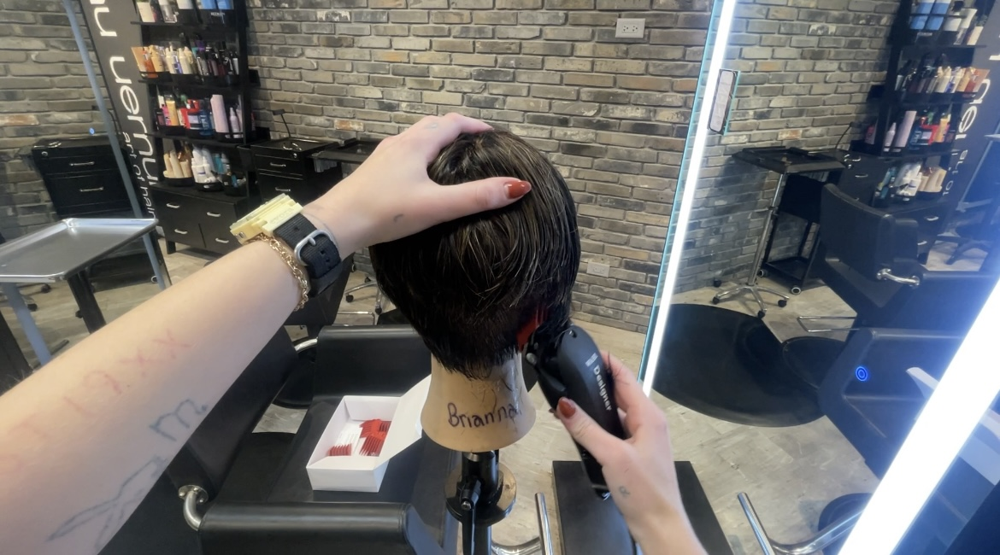
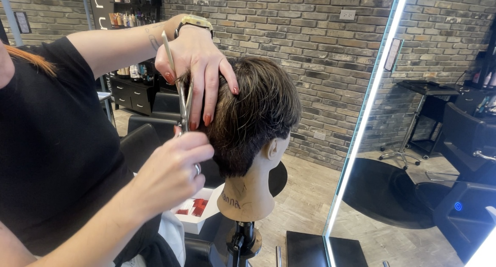
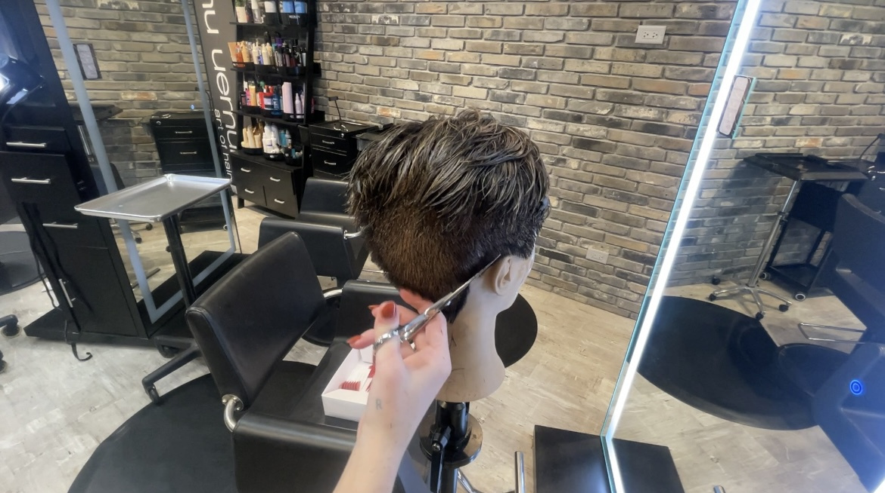
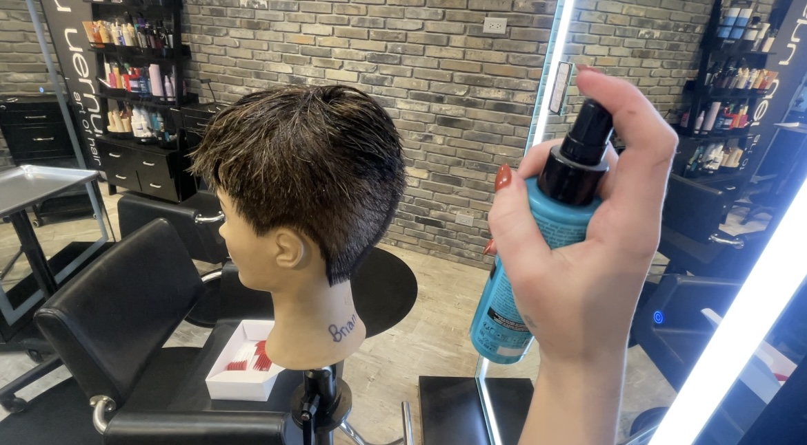

How to Cut Hair: A Step-by-Step Guide to a Short Barber Haircut
Now that you're a pro with the shears, let's try out the clippers! If you want to learn how to give a short barber haircut, follow these steps to make it easy and successful.
Here’s how you can do it in 6 easy steps:
Step 1:
Prepare the Hair
Start by washing the hair and towel-drying it until it’s damp. Use the spray bottle to lightly mist it with water if it’s drying out. This will make it easier to cut.
Step 2:
Choose Your Length
Decide how short you want the hair. Use hair clippers with the appropriate guard length. For a short haircut, you might use a #1 or #2 guard.

Step 3:
Start Cutting
Begin at the back of the head, moving the clippers from the neck up toward the crown. Keep the clippers flat against the scalp for an even cut. Repeat this on the sides.

Step 4:
Blend the Hair
To blend the longer hair on top with the shorter sides, switch to a longer guard. Move the clippers from the top down into the shorter sections. For the top, hold the shears at a 45-degree angle to create texture and lift. You can also cut straight across for a more blunt look or point cut by holding the shears vertically for a softer finish.

Step 5:
Finishing Touches
Use shears to trim any uneven spots and shape the hair around the ears. Finally, clean up any loose hair.

Step 6:
Style the Hair
To style the hair, start with a small amount of pomade, gel, or texture spray. Apply the product and run your fingers through the hair, focusing on the top. You can spike it up for a fun look or smooth it back for a classic style. Experiment with different styles to see what looks best!

Conclusion
And there you have it! A stylish short barber haircut that you can master with practice.